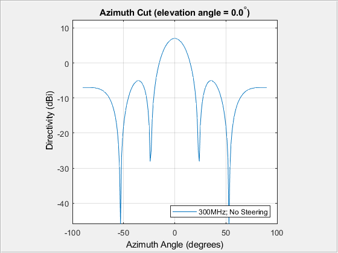

Radar Homework Chapter 9 - Joshua Gould
Contents
9-8
h = phased.ULA;
h.NumElements = 5;
h.ElementSpacing = 0.5;
h.ArrayAxis = 'y';
el = phased.IsotropicAntennaElement;
h.Element = el;
F = 300000000;
PS = 300000000;
fig = figure;
panel = uipanel('Parent',fig);
hAxes = axes('Parent',panel,'Color','none');
NumCurves = length(F);
fmt = 'rectangular';
cutAngle = 0;
pattern(h, F, -90:90, cutAngle, 'PropagationSpeed', PS, 'Type', ...
'directivity', 'CoordinateSystem', fmt );
axis(hAxes,'square')
legend_string = cell(1,NumCurves);
lines = findobj(gca,'Type','line');
for idx = 1:NumCurves
[Fval, ~, Fletter] = engunits(F(idx));
legend_string{idx} = [num2str(Fval) Fletter 'Hz; No Steering'];
end
legend(legend_string, 'Location', 'southeast');

9-9
clc
f = 10;
c = 300000000;
WL = (c / (f*10^9));
Bw = 1;
Tbw = 65 * (pi/180);
k = 228.60;
x = (WL / (1 + sin(Tbw) )) ;
Bwr = 1 * pi/180;
L = ( 0.886 * WL )/Bwr;
N = L / x;
fprintf('x = %f m. ',x)
fprintf ('\nNumber of elements = %f.',round(N))
x = 0.015737 m.
Number of elements = 97.000000.